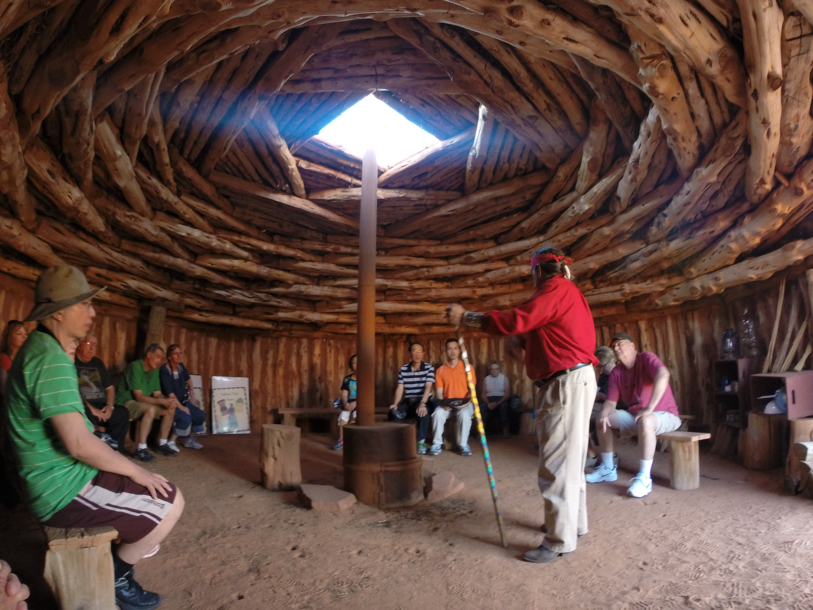
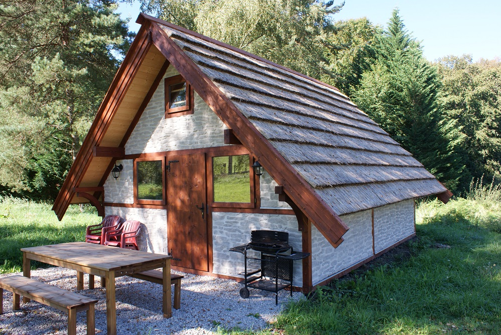
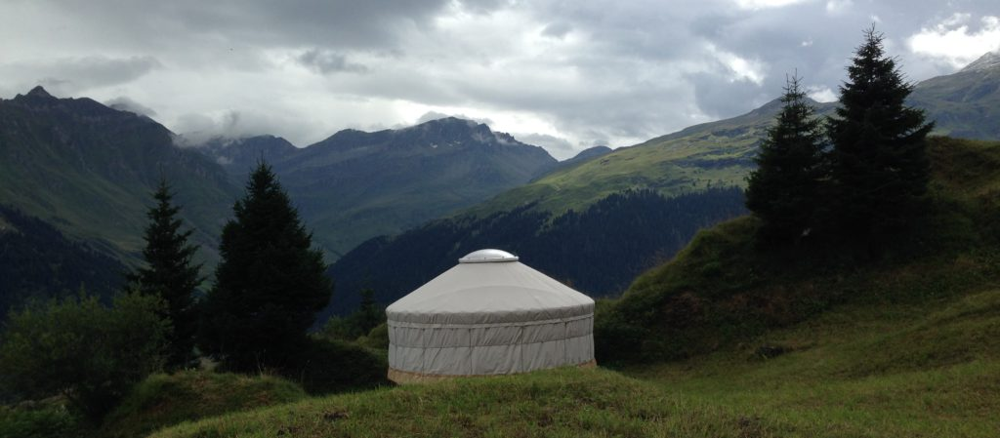
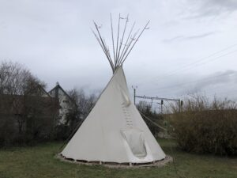
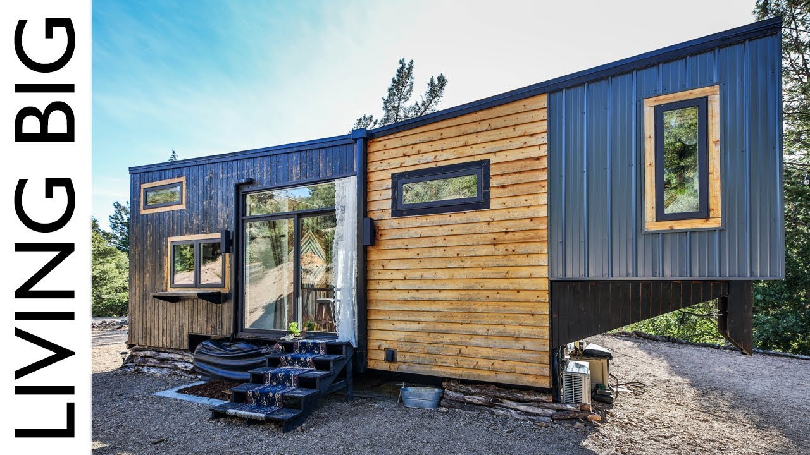

Habitats
Maisons en paille porteuse
Principe
Il s’agit d’empiler des "grosses" bottes de paille compactées à très haute densité. Ce sont les bottes de paille "moderne" de dimensions typique 1 x 1 x 2,50 m.
Ces bottes sont tellement compactes qu’elles résistent parfaitement aux efforts de compression d’un bâtiment de 3 étages …

Implémentation
Le DTU "Construction Paille" ne couvre pour l’instant que la technique d’une ossature porteuse et l’emploi de la paille uniquement comme isolant thermique/phonique. Comme ce DTU ne couvre pas la technique de la "paille porteuse" il n’y a que des projets individuels non couverts pas l’assurance décennale.
Il s’agit de rééditer les exemples réalisés par nos voisins Suisses, Tchèques … ou certains Français …

La conception architecturale doit tenir compte des particularités du matériau tout en intégrant les contraintes systématiques à tout projet :
-
grosses bottes de paille haute densité : très grande dimension des bottes, forte épaisseur des murs (ébrasements aux ouvertures), masse importante (400 à 500 kg par botte), sensibilité à l’humidité en phase réalisation, variations dimensionnelles pluri-centimétriques
-
étanchéité à l’air : maintien d’un contact étanche sur les dormants des huisseries lors du tassement du matériau
-
barrière contre les migrations d’humidité, qu’elle provienne de l’extérieur (météo, sols) comme de l’intérieur (production par les habitants)

Principales difficultés
-
terrain d’implantation
NB : La technique d’empilement est simple, mais ce sont tous les détails qui sont délicats dans ce type de projet …
Habitats expérimentaux
Habitat "primitif"
Ré-éditer la réalisation (provisoire ou définitive) d’habitats "primitifs", et au travers de ces réalisations :
-
s’approprier les techniques de construction sur des matériaux naturels
-
expérimenter un cadre bâti différent
-
transmettre le plaisir du travail manuel lors de construction en groupe (thérapie? socialisation? …)
Nous aimerions réaliser les constructions "primitives" suivantes
-
"Hogan" Navajo : le plaisir d’être dans une hutte ronde
 -
"Maison longue" Gauloise : le retourt aux sources
Figure 1. maison gauloise moderne -
"Tipi" Indien ou yourte mongole, idéal pour passer quelques mois en pleine nature, ou plus …
Figure 2. yourteFigure 3. tipi
Habitat "alternatif"
Expérimenter d’autres façons d’habiter, en accord avec les profonds changements à venir, tant climatiques qu’économiques …
-
Yourte moderne : "Héliyourte" (charpente autoportante)
 Figure 4. intérieur d’une héliyourte montrant sa charpente extrêmement résistante
Figure 4. intérieur d’une héliyourte montrant sa charpente extrêmement résistante -
"Tiny House" : maisonettes mobiles (mode "US" gagnant nos contrées)
Figure 5. une Tiny house luxueuse destinée à rester à demeure (la remorque a perdu le timon …)
Principales difficultés
-
respect des règles d’urbanisme
-
terrain d’implantation
Poëles de masse
Principes
Un poêle de masse ou poêle à accumulation est un appareil de chauffage principal. Sa masse constituée de matériaux lourds (pierre, brique ou béton) stocke l’énergie d’une flambée quotidienne unique et intense (entre 1 et 3 h) et restitue longuement la chaleur une fois le feu éteint (jusqu’à 24h). Sa masse lui confère une inertie thermique propice à atténuer la courbe de températures de l’intérieur d’un bâtiment (ce qui vaut à ces poêles d’être aussi nommé "poêles à inertie").
Toute la quantité de bois nécessaire pour chauffer l’habitat est brûlée en une seule fois, ce qui induit des températures élevées dans le foyer et permet d’obtenir une combustion complète et peu polluante. L’accumulateur est conçu pour absorber une majorité d’énergie issue de la combustion et des fumées. Quand elles quittent le poêle, les fumées sont donc considérablement refroidies. La chaleur accumulée est diffusée principalement par rayonnement et dans un pourcentage moindre par convection. Ce mode de chauffage par rayonnement implique qu’il soit placé au centre de l’habitat. La plupart des poêles de masse actuels sont placés dans la pièce principale ouverte sur le salon, la salle à manger et la cuisine. Avec un rendement pour la plupart supérieur à 80%, ces poêles font partie des appareils de chauffage au bois les plus performants.
Le poêle de masse consomme trois fois moins de combustible qu’un appareil traditionnel.
Le prix des énergies s’équilibre naturellement. À confort égal, chauffer une maison au bois, à l’électrique ou au fuel coûte peu ou prou la même somme. Le poêle de masse et le solaire thermique échappent à cette loi du marché grâce à leur relative marginalité.
Implémentation
Poêles de masse "Uzume"
Le chauffage au bois bûche avec des poêles de masse de type batch-rocket ou batchblock nous semble très prometteur, de par son efficacité (rendement de combustion et accumulation de chaleur) et sa sécurité (1 ou 2 chauffes seulement par jour), en période diurne uniquement.
La société UZUME a conçu, testé et procède à l’amélioration continue de nombreux modèles de poêles à des prix volontairement bas, en s’inspirant du concept des poêles type "BatchRocket".

Dans l’esprit de l'"opensource", il est possible de réaliser soi-même un de leur modèle puisque les plans sont disponible sur leur site web. Dans la pratique, il faut garder à l’esprit que c’est un travail délicat et relève d’une spécialisation poussée. Notre objectif sera évidemment de réaliser un poêle de ce type, mais seulement après une période d’apprentissage …
Poêlito
Poêle de masse à inertie semi-démontable, développé et promu par l’association Des 2 mains.

Réalisé dans un "corps" en bidon de récupération, c’est une parfaite approche pour un modèle plus évolué comme le "batchblock" de Uzume.
NB : Comme pour d’autres projets de ce FABeLABe, il ne s’agit que d'implémenter la solution conçue au préalable